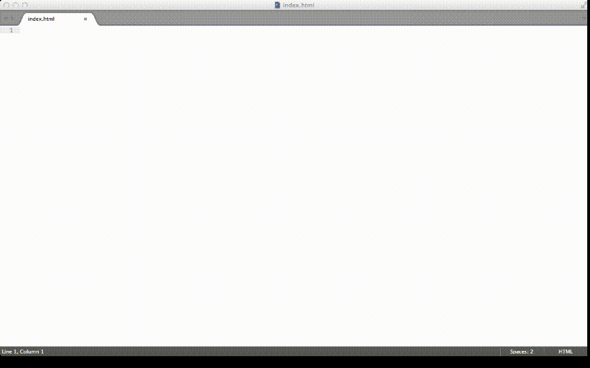

Kom igång med din idé
Hur man gör en webapplikation på 15 minuter
Det går att göra så mycket på webben
Alla kan bidra, tröskeln är låg, det finns många att fråga
Men det är ändå så himla svårt att komma igång
Alla försök känns så här

Hur börjar man egentligen?

Det finns hjälp att få
Många har tänkt och kännt exakt likadant, och de har skapat verktyg som kan användas
Vad är det vi behöver?
- HTML-struktur
- Projektstruktur
- Beroenden
- Utvecklingsprocess
Hur?
Intstallera ett par verktyg som ska skapa ett skelett till en webbapplikation/hemsida
Dags för installation
men först: kattpaus

(det är bara 9 steg)
Steg 1, installera Nodejs
Gå till nodejs.org, ladda ner och installera
Steg 2, installera git
Gå till
http://git-scm.com/downloads
Steg 3, installera Yeoman
npm install -g yoSteg 4, installera Bower
npm install -g bowerSteg 5, installera Grunt
npm install -g grunt-cliSteg 6, installera generator
npm install -g generator-webappSteg 8, generera projektet
yo webappSteg 9, starta webbapplikationen!
grunt serveVad gjorde vi?
npm install –g yonpm install –g bower
npm install –g grunt-cli
npm install –g generator-webapp
mkdir my-ggm-project
cd my-ggm-project
yo webapp
grunt serve
Vad fick vi?
- Projektmapp med rekommenderad struktur- HTML-fil med allt importerat och klart
- CSS och JavaScriptfiler
- Tomteverkstad
Sen då?
Vad kan man göra?Angular, WordPress, Ember.....
Slut!
Allt finns på stinaq.meJag finns också på stinaq.me, och twitter, och om någon testar blir jag så glad!